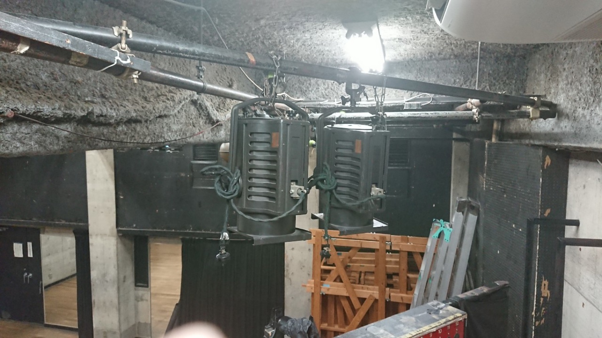
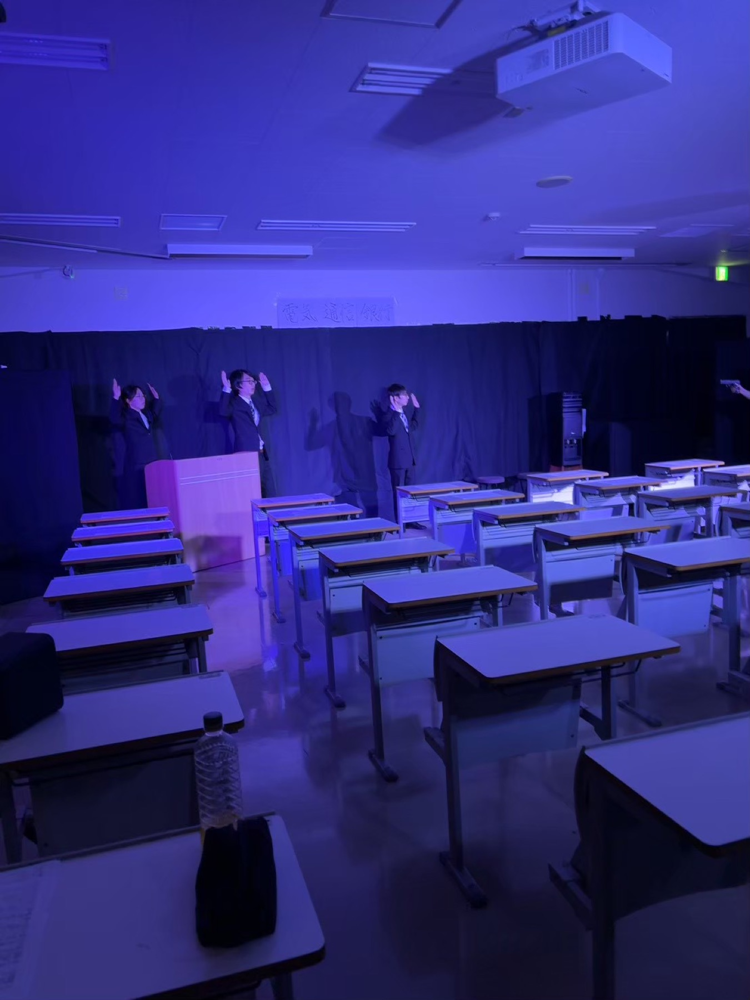

梅雨公演『潜る男』
7月1日、調布市文化会館たづくり。入場無料、事前予約制。

7月1日、調布市文化会館たづくり。入場無料、事前予約制。
記事はNotionの指定データベースから同期する想定の構成。
凝った表示はフロント側で固定し、更新作業は表への入力に閉じる。
演劇同好会は、演劇経験の有無を問わず、企画、脚本、演出、出演、舞台技術を横断して試すための場所である。
年2回の本公演と、短編を試す試演会を軸に活動する。脚本会議から小屋入りまでを部員で分担し、舞台制作の全工程を経験する。
後輩が更新するのは公演情報、稽古記録、予約リンクの3点。サイトの見た目はフロント側で固定し、日常更新はNotionの表入力へ寄せる。


最新3件の公演を表示する。各カードからPRページへ進める。
ブログはカテゴリで絞り込める。後輩の入力項目は、タイトル、日付、カテゴリ、本文、公開チェックだけで足りる。
記事と公演情報は団体用Notionのデータベースで管理。
Next.jsやAstroが公開済みデータだけを取得。
Vercel、Netlify、GitHub Pagesで維持費を抑える。